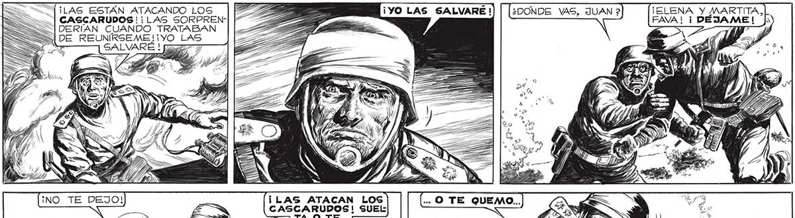
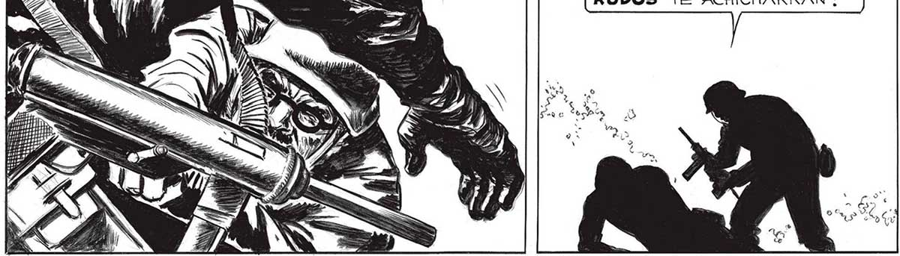

¡LAS ESTÁN ATACANDO LOS | CASCARUDOS! ¡LAS SORPREN|DERÍAN CUANDO TRATABAN | DE REUNIRSEME! ¡YO LAS : SALVARE ! 222777 = Y TIE DS 2 o AZ as ¡LAS ATACAN LOS CASCARUDOS! SUEL TA O TE... PERDONA, PERO NO HABÍA OTRA FORMA DE DETENERTE.¡SI SALES, LOS CASCARUDOS TE ACHICHARRAN ! TELENA Y MARTITA! ¡TU |, ¿PR NO ENTIENDES: ¡DEBO Pr SALVARLAS! ¡ASÍ TENGA A Z ES L 127

